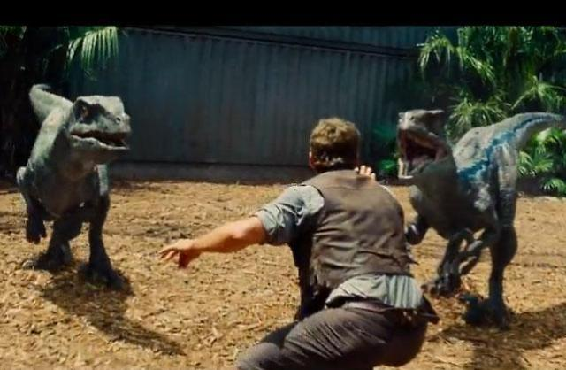

과학 소재 영화들을 소개합니다
영화를 골라보세요!

줄거리: ‘쥬라기 월드’이 문을 닫은 지 22년, 유전자 조작으로 탄생한 공룡들을 앞세운 ‘쥬라기 월드’는 지상 최대의 테마파크로 자리잡는다.
하지만 새롭게 태어난 하이브리드 공룡들은 지능과 공격성을 끝없이 진화시키며 인간의 통제를 벗어나기 시작하는데…(출처-다음영화)
과학적인 요소: 쥬라기 월드에서 태어난 공룡들은 유전자 조작으로 만들어진 공룡들이다.
생명과학적인 원리를 영화에서 발견할 수 있다.